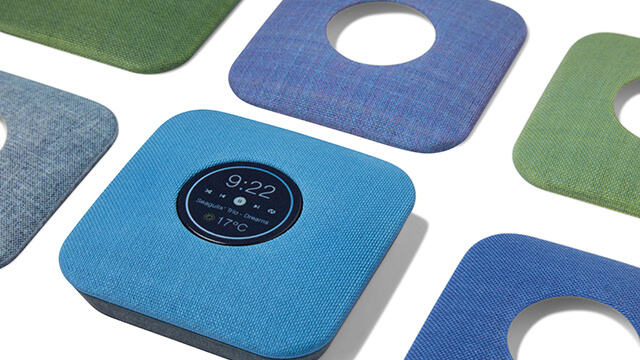

Stratasys J55™
コンパクトフルカラー3Dプリンタ
Stratasys J55™は、回転式プリントプラットフォームを採用したコンパクトで静音性に優れたオフィス向けフルカラー3Dプリンタです。
高精細かつ高品質なフルカラー造形を可能にする「J55」は、オフィス環境での使いやすさを追求し、新たに回転式プリントプラットフォームを採用することでプリンタ本体のコンパクト化を実現しました。また、造形時の稼働音が家庭用冷蔵庫と同様の53dB未満という超静音性に優れ、さらに空気清浄システム「ProAero™」を接続することで、造形中に発生する臭気をフィルタ除去しクリーンな空気を排出。オフィスやスタジオ環境に最適な3Dプリンタです。
オフィス環境に特化したフルカラー3Dプリンタ
回転式プリントプラットフォームと固定プリントヘッドによる新システムを採用することにより、メンテナンス性の向上とプリンタ本体のコンパクト化を実現しました。
また、造形時の稼働音が家庭用冷蔵庫と同様の53dB未満という超静音性に優れ、さらに空気清浄システム「ProAero™」を接続することで、造形中に発生する臭気をフィルタ除去しクリーンな空気を排出。オフィスやスタジオ環境でもニオイや稼働音を気にすることなく作業をすることが可能です。
色やテクスチャ、質感を忠実に再現
最大5種類の材料を同時使用することが可能で478,000色のフルカラー、PANTONE®カラーやテクスチャマッピングなど製品の外観や質感をデザイナーや設計者のアイディアに限りなく近いモデルを造形することにより、製品設計プロセスの効率化が期待できます。
PANTONE®カラー対応
PANTONE®カラーの対応で、より正確なプロトタイプの作成を実現できます。PANTONE®カラー表現を可能にしたことで、手作業による塗装などに伴う時間とコストの無駄を省き、より迅速な最終モデルをデザイナーや設計者に提供することができます。
高い透明度を実現した「VeroUltraClear」、コンセプトモデルを素早く造形可能な「DraftGray™」
ストラタシスの材料の中でも大変需要の高い透明モデル「VeroClear」が、さらに高い透明度を実現した「VeroUltraClear」として新登場。これにより内部機能の視覚化を改善し、ガラスやアクリルのような透明度の高いパーツをよりリアルに再現することができます。また、コンセプトモデルをよりスピーディーかつ低コストで造形することができる「DraftGray™」も登場。
※「VeroUltraClear」、「DraftGray™」は、J850、J826、J55のみ使用可能な材料となります。
| Stratasys J55™ | ||
|---|---|---|
| ビルドモード：積層ピッチ（Z軸） | ハイクオリティスピードモード（HQS）：18.75μm | |
| 造形サイズ | 最大1,174㎠ | |
| 解像度 | (X)300dpi×(Y)300dpi×(Z)1,350dpi | |
| モデル材 | 硬質樹脂 | VeroPureWhite（白）、VeroBlackPlus（黒） |
| 透明硬質樹脂 | VeroUltraClear（透明）※VeroClearと同時使用（対応予定）、VeroClear（透明） | |
| 透明カラー硬質樹脂 | VeroCyan-V（透明：シアン）、VeroMagenta-V（透明：マゼンタ）、VeroYellow-V（透明：イエロー） | |
| 高速造形専用樹脂 | DraftGray™（グレー） | |
| サポート材 | SUP710™ | |
| 材料カートリッジ数/容量 | モデル材5種類×2、サポート材×2 / 1.1kg | |
| プリンティングヘッド | 3ユニット | |
| 電源電圧 | 単相 AC100～120V / 10A、50/60Hz | |
| 本体寸法/重量 | (W)651mm×(D)661mm×(H)1,551mm / 228kg | |
| ネットワーク接続 | LAN - TCP/IP | |
| 制御ソフトウェア | GrabCAD Print（自動トレイ配置、スライスデータ作成） | |
| オプション | UPS、WaterJet（サポート除去装置）、サーバーPC | |